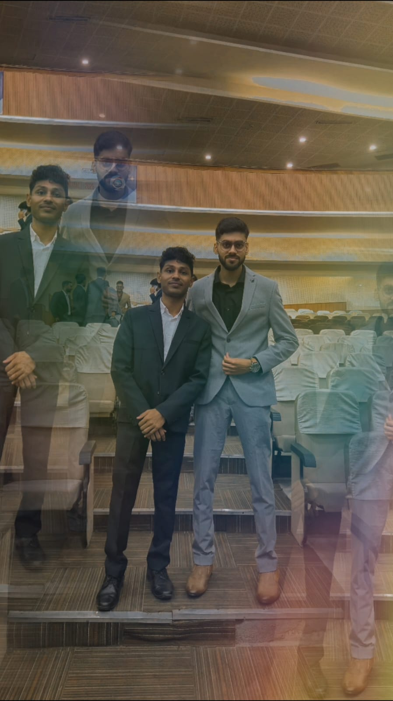

CMA ASHIM BHAI
Ashim Bhai, you are not just my senior—you are truly like my real brother. In every phase of my journey, you stood beside me—not only guiding me but protecting me like family. Your brilliant mind and AIR 36 achievement inspire me deeply, but what inspires me even more is your kind heart, humble nature, and the way you care for others without showing off.
Whenever I felt low or confused, your support gave me confidence, your words gave me direction. You never let me feel alone in this journey. People like you are rare—those who rise high but never forget to lift others. I’m truly blessed to have you in my life. You are not just my inspiration—you are my strength.
ARIJIT BHAI
Arijit Bhai, you’ve taught me things no book could teach. You may speak sharply sometimes, but deep inside I know every word comes from love, care, and honesty. You are experienced, intelligent, and always practical — and those qualities make you a true leader in both studies and life.
Even if your truth hurts, it corrects me. Even if your advice feels strict, it saves me. You are the one who helps me identify my mistakes and become stronger. Your journey as a CMA Finalist and business consultant inspires me to build not just a career, but a life with purpose and clarity. I respect you from the bottom of my heart.
DEEPAK BHAI
Deepak Bhai, your name reminds me of brilliance — because you truly are one of the brightest people I’ve ever met. Topping the Odisha Board exams, CMA Inter, and being my past roommate — I’ve seen your excellence not from a distance, but closely, every day.
We sat at the same table, walked the same path, and you treated me not just as a friend — but like a younger brother who needed guidance. You always explained my doubts like a teacher, with patience and care. You never showed pride in your achievements — instead, you used your knowledge to help others like me. I will always remember those market walks, shared laughs, and those long study hours. Your simplicity and brilliance together make you my role model.

JAYBRAT BHAI
JD Bro is one of the most peaceful and kind-hearted people I’ve met. He always carries a calm and composed attitude that inspires everyone around him.
Beyond his CMA preparation, he has a magical voice and sings beautifully like a professional singer. His simplicity, sincerity, and soulful energy have touched me deeply. He is not just a friend, but a true source of creative and emotional inspiration for me.
YTBR AVINASH BHAI
Avinas Bhai is a powerhouse of creativity and energy. A CMA Finalist, a YouTuber, and a Vlogger — he’s the kind of person who inspires by action, not just words.
He balances his studies with his passion projects beautifully. I’ve learned from him how to dream big and work consistently. His multitasking and hard work are my daily motivation.
SAHIL BHAI (PUSHPA RAJ)
Sahil Bhai is pure joy in human form. A CMA Finalist with a rockstar personality and a heart of gold. His sense of humor can turn anyone’s worst day into the best.
But behind that funny side is a wise, mature, and caring friend who supports like no other. His friendship is a gift, and his vibe is unmatched. He taught me that happiness and strength go hand in hand.
ANIL PASWAN SIR
Anil Sir is more than just my office guide — he’s a mentor who changed my journey forever. I worked with him during my CMA internship in a CA firm, and every moment was a lesson.
On the outside, he may seem strict, but inside, he’s a deeply kind person who truly cares. He supported me in my personal and financial problems without hesitation. He’s the reason I’ve grown so much professionally. I will always be thankful to him.
NIKHIL BHAI & CHIKU
Nikhil Bhai and Chiku are not just colleagues — they’re my brothers. We shared food, dreams, laughs, and goals together.
During our time at the CA firm, we worked like one family. The bond we built there will always be special. They stood by me, supported me, and made work feel like home. True friendship like this is rare, and I feel lucky to have it.